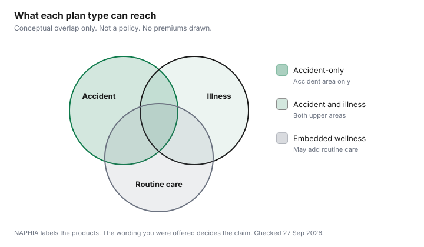

Pets · Canada
Accident-Only vs Accident and Illness vs Wellness Plans in Canada: What Each Pays For
In Canada, accident-only pet insurance pays for injuries, accident-and-illness adds illnesses, and embedded wellness adds routine care. NAPHIA’s 2026 highlights put average annual premiums for dogs at $251, $1,176 and $2,623 respectively. Owners buy the wrong tier when the marketing name and the contract are not the same sentence. Accident-only, accident-and-illness, and insurance with embedded wellness are three products the North American Pet Health Insurance Association monitors. This page stays on that structure. Whether a premium is worth paying, set beside a fund you will actually hold, is the value framework. How to read a deductible, a reimbursement percent, a limit, and a pre-existing definition is the clause guide. Nothing here is a recommendation to buy or to decline a policy.
Key takeaways
- NAPHIA’s 2026 highlights, footer dated 21 Jun 2026 and reflecting 2025, define accident-only with injury examples, accident-and-illness as those benefits plus illnesses, and embedded wellness as plans that may add routine care.
- Canadian average annual premiums in that report, in Canadian dollars, are accident-only $251 for dogs and $212 for cats, accident-and-illness $1,176 and $601, and embedded wellness $2,623 and $1,499. Those are industry averages, not your quote.
- The highlights do not publish waiting-period days, a national exclusion list, or a premium by age or breed. No day count is copied from a Trupanion specimen policy; check the policy you are offered.
- The Pets Plus Us Costco offer page, checked the same day, treats conditions noted, symptomatic, or diagnosed before enrollment or during a waiting period as pre-existing and not eligible. The user guide prevails over the advertisement.
- Match the product to the bill you are trying to fund, then keep cash for what the wording will not pay. The emergency-fund worksheet is that cash. Routine invoices are not the same pile.
The three plan types in plain language
The highlights say the data represent about 99 percent of written pet health insurance premium in the United States and Canada, compiled by Willis Towers Watson from a member survey plus public information. Dollar amounts are in the country’s currency.
The Canadian premium table is therefore in Canadian dollars. In-force figures are as at 31 Dec 2025. The premium pages carry the report’s first footnote: member-contributed data plus public sources, aggregated, with actuarial inferences where the compilers needed them. Treat the labels below as the industry’s own glossary, then replace them with the sentences in the booklet you were given.
Accident-only, in that glossary, is illustrated with foreign-body ingestion, lacerations, motor vehicle accidents, ligament tears, and poisoning. Accident-and-illness is accident benefits plus illnesses such as cancer, infections, and digestive problems. Insurance with embedded wellness is described as comprehensive plans that may include vaccinations, early screening diagnostics, consultations for proper nutrition, dental care, and similar items. Endorsements are listed separately, as riders such as wellness or cancer endorsements, and they are not given Canadian average prices in the highlights. A rider is not the same product as the column it sits beside until the wording says what it pays.
The 2025 Canadian averages on that table are accident-only $251 for a dog and $212 for a cat, accident-and-illness $1,176 and $601, and embedded wellness $2,623 and $1,499. From 2024 to 2025, accident-only fell 6.9 percent for dogs and 4.4 percent for cats. Accident-and-illness rose 9.9 percent and 9.1 percent. Embedded wellness rose 12.6 percent and 21.9 percent. Those changes are the industry average, not a forecast for your renewal. The renewal guide is what to do when the notice in your hand is a different number. Penetration in the same highlights is 3.72 percent of an estimated 17.3 million pets. An average is the price among animals that are insured, not a bill the country has assigned to you.
What each typically pays for, and what none of them cover
Use the glossary as a sorting tool, not as a claim promise. An accident-only policy, on the report’s examples, is aimed at the sudden injury list.
An illness such as cancer or an infection is the step up to accident-and-illness, on the report’s description. Routine vaccines, screening, a nutrition consult, and dental care are the items the wellness description says a plan may include. “May” is doing the work in that sentence. A wellness average that is larger than an accident-and-illness average is a premium gap, not proof that a dental invoice will be paid. Dental on a cost sheet and dental inside a policy are different documents. The dental guide is the clinic estimate. This page is the product label.
What none of the three labels automatically cover is the part the highlights refuse to invent for you. There is no national exclusion list in the report. Hereditary and congenital conditions, a maximum age to enrol, a per-condition limit, and a reimbursement percent are clause types. They live in the wording, which is why the clause guide exists. The Pets Plus Us Costco advertisement, which is one offer and not a national rule, says all plans have limitations and exclusions, that products and discounts may vary by province and territory, and that the user guide prevails. It also says conditions noted, symptomatic, or diagnosed before enrollment, or during a waiting period, are not eligible for reimbursement. That is one offer’s pre-existing sentence. Another insurer can write a different one. Do not paste this sentence onto a logo that was not on that page.
The claims slides in the same highlights are labelled North America, and the ten dog and ten cat examples print places in the United States. They are not used here as Canadian invoices. A large paid claim in another country does not tell you what your wording will reimburse in your city. If you want a Canadian price for a procedure, ask the clinic for an estimate. Ways to ask, in Ontario, are on the vet-bill guide.
Wellness plans and add-ons: insurance or prepaid routine care?
Embedded wellness, as NAPHIA describes it, can look like insurance and behave like a schedule of routine services. The test is simple.
If the plan pays only after an unexpected illness or injury, it is not buying your vaccines. If the plan may include vaccines, screening, nutrition consultations, and dental care, you are looking at a product that can prepay routine work, and you still have to read which of those items are actually listed. The highlights do not itemize a Canadian wellness basket. They price the product category. Dog embedded wellness at $2,623 is $1,447 above the dog accident-and-illness average of $1,176. Cat embedded wellness at $1,499 is $898 above the cat accident-and-illness average of $601. Those gaps are premiums. They are not benefits.
A wellness rider, which the report lists under endorsements, is a different object again. The highlights do not give it a Canadian average price. If a quote adds a rider, price the rider alone. Do not assume it costs the gap between the columns. Write down what the rider pays, the annual cap if there is one, and whether unused routine benefits disappear at renewal. A prepaid exam you will not book is not a saving. The adult lines on a cost-of-care sheet are the routine bills you can already see coming. This page does not reprint procedure fees from those sheets. Use the dog cost guide for the sheet cited in that article, and use your own invoices for the year you are budgeting.
When the add-on is neither
Some offers mix a discount, a hotline, or a first month with the insurance contract. The Pets Plus Us Costco page says the first month is complimentary for new clients, and it says in-app purchases on a virtual-consult tool are not covered under the policy. A complimentary month and a virtual consult are not a wellness plan. Put them in a separate line on your comparison sheet so they do not masquerade as dental coverage. The quote spreadsheet is the habit of locking the same deductible, reimbursement, and limit before you sort on price. It was written for household policies. The columns transfer.
Waiting periods, pre-existing conditions and exclusions by plan type
A waiting period is a stretch at the start of the policy, or after a change, when a class of claims is not eligible. Illness waits and injury waits are often separate sentences.
Ligament tears appear in NAPHIA’s accident examples, and the report does not say how many days an insurer waits before a ligament claim can be eligible. No day count is copied here. A Trupanion sample page returned an access block on 27 Sep 2026, so this guide does not quote a five-day or thirty-day clock from that site. If your booklet prints a number of days, that number is yours.
Pre-existing is the definition of which signs, diagnoses, or treatments from before the policy, or during a waiting period, will not be paid later. The highlights do not print a look-back in months, and they do not print a rule that a condition becomes eligible again after a symptom-free stretch. The Costco offer page does print one version: noted, symptomatic, or diagnosed prior to enrollment, or during a waiting period, means not eligible. Curable and incurable are the fork inside other wordings. Both can be labelled “pre-existing” on a summary screen. The summary is not the definition. Read it before you cancel a policy you already have. Switching is the subject of the renewal guide, because a lower premium that excludes the condition already in the file is not the same product.
Exclusions by plan type follow the glossary only as far as the glossary goes. Accident-only, on the examples, is not the illness list. Accident-and-illness, on the examples, is not a promise of vaccines. Wellness “may” add routine items and still exclude a condition the wording calls pre-existing, hereditary, or elective. Breeding, cosmetic procedures, and food that is not a prescribed treatment are the sort of line you should search for in the booklet. This page does not assert that every Canadian policy excludes them, because no national specimen was the source. Search your PDF for those words and write down what you find.
Matching plan type to your pet's age, breed and your emergency fund
The highlights do not price a young mixed breed against a breed associated with expensive conditions. They do not price age bands.
Using the national average as “the mixed-breed price” would invent a discount the report does not print. The useful version of this match is three questions you ask the quote. Does the price use age at enrollment, age at each renewal, or both? Are hereditary or congenital conditions excluded, capped, or covered after a wait? What is the maximum age to start a new policy, if one is printed? Those answers, not the species average, are what separate one animal from another. An older pet can still be insured. The risk is that the history already in the clinic’s file becomes the new contract’s pre-existing list. Ask that question before you let the old policy lapse.
The emergency fund is the amount the wording will not pay: the deductible, your share after reimbursement, anything over the annual limit, and any excluded line. The fund guide builds that balance from an estimate your own clinic gives you. It does not invent a surgery price. A household that buys accident-only because the premium is the smaller average has chosen not to insure the illness list. That choice is coherent if the fund, or the cash you can raise, can carry an illness. It is incoherent if the fund is a jar you spend in March. The annual cost guide is the routine pile, which you will spend. Do not add it to the emergency pile and call the sum one target.
Plan-type comparison table and a checklist for reading a policy
Read in this order. Name the product in the insurer’s words, not the ad’s. Write the accident examples and the illness examples you were given, and circle anything your pet has already been treated for.
Find the waiting periods and when each clock starts. Find the pre-existing definition, including whether a symptom-free stretch exists. Find the deductible, the reimbursement percent, and the annual or per-condition limit. Find what routine care is inside the contract and what is a separate rider. Then put the annual premium next to the NAPHIA average for that species and that product. A large gap is a question, not a bargain badge and not a rip-off badge. Confirm the underwriter on the specimen, not on a warehouse-club banner. One worked example of that last step is the group and membership guide.
| Plan type | What the source says it covers | What to treat as not granted | Waiting periods | Who it can suit | 2025 Canadian average, dog / cat |
|---|---|---|---|---|---|
| Accident-only | NAPHIA examples: foreign-body ingestion, lacerations, motor vehicle accidents, ligament tears, poisoning. | Illnesses such as cancer, infections, and digestive problems are the step up, not this column. No national exclusion list was printed. | Not published in the highlights. Read the wording. | A household that can fund illness from cash and wants a contract aimed at the injury list. | $251 / $212 |
| Accident and illness | Accident benefits plus illnesses such as cancer, infections, and digestive problems. | Vaccines, screening, nutrition consults, and dental are not this description. Pre-existing rules still apply. | Not published in the highlights. The Costco offer page says a waiting period can make a condition pre-existing, without printing days. | A household insuring unexpected illness as well as injury, and still holding cash for the deductible and the excluded lines. | $1,176 / $601 |
| Embedded wellness | Comprehensive plans that may include vaccinations, early screening, nutrition consultations, and dental care. | “May” is not a coverage grant. Riders are a separate product and have no Canadian average in the highlights. | Not published. Confirm which routine items have no wait and which medical items do. | A household that will use the routine items actually listed, after comparing them with invoices it already expects. | $2,623 / $1,499 |

Sources
- NAPHIA, 2026 State of the Industry Report highlights, footer dated 21 Jun 2026, reflecting the 2025 calendar year. PDF checked 27 Sep 2026. Product definitions, Canadian average premiums, year-over-year changes, penetration of 3.72 percent, and the currency note that Canadian figures are in Canadian dollars. Premium pages use footnote 1 (member data plus public sources). Claims examples are labelled North America and print United States locations, so those dollar amounts are not used as Canadian prices. No waiting-period days, age bands, or breed premiums were in the highlights.
- Pets Plus Us, pet insurance for Costco Canada members, and the brochures and guides page, checked 27 Sep 2026. Underwriter named as Northbridge General Insurance Corporation. Pre-existing sentence, waiting periods “may apply,” user guide prevails. Accident annual limit $5,000 and accident-and-illness limits of $7,500 or $15,000 are on that offer page and are that offer’s limits, not an industry rule. They are not repeated in the table above because this table is plan type, not one membership contract.
- Trupanion Canadian pages on waiting periods and birthday pricing returned an access block on 27 Sep 2026. No day count and no age rule is quoted from that site.
- Arithmetic stated in the text: $2,623 − $1,176 = $1,447; $1,499 − $601 = $898. Those are premium gaps, not benefits.
Frequently asked questions
What does accident-only pet insurance cover?
NAPHIA’s 2026 highlights, reflecting the 2025 calendar year, describe accident-only with examples that include foreign-body ingestion, lacerations, motor vehicle accidents, ligament tears, and poisoning. Accident-and-illness is those accident benefits plus illnesses such as cancer, infections, and digestive problems. The highlights do not publish a national exclusion list or a waiting-period day count. The policy wording you were offered is the list that decides a claim.
Is a wellness plan worth it?
The highlights describe insurance with embedded wellness as comprehensive plans that may include vaccinations, early screening, nutrition consultations, and dental care. The word “may” is the report’s, and the report does not score whether the extra premium is worth the routine invoices you already expect. Compare the rider or embedded plan you were actually offered with the routine bills you can already list. This page does not name a plan that wins that comparison.
Are pre-existing conditions ever covered?
The highlights do not print a rule that a pre-existing condition becomes covered after a set number of months. The Pets Plus Us Costco offer page, checked 27 Sep 2026, says medical conditions that are noted, symptomatic, or diagnosed before enrollment, or during a waiting period, are pre-existing and not eligible for reimbursement. Some other wordings use a symptom-free period. That period, if any, is in the user guide, not in the highlights.
What waiting periods apply?
NAPHIA’s highlights do not publish how many days an insurer waits. The Pets Plus Us offer page says waiting periods may apply and that the user guide prevails, and it does not print the day count. A condition that starts during a waiting period can be treated as pre-existing on that offer page. Read the clocks on the wording you were given before you rely on a number from a forum.
Which plan type is best for an older pet?
The highlights do not price age bands, and they do not name a best plan for an older animal. Age can change whether a new policy will treat the history already in the clinic file as pre-existing, which is a wording question, not a species average. Match the product to the illnesses you are trying to fund, and keep an emergency balance for what the wording will not pay. This page does not rank a product.
Researched and drafted with AI assistance and fact-checked against official Canadian sources. How we create content.
Disclosure: Pet insurance quote and comparison referral types are an offer type. Saving Optimizer may earn a commission if we later add a partner link. We do not currently claim a partnership with any insurer, broker, or comparison site. We do not rank plans and we do not name a best policy. Education only, not insurance advice. The wording you are offered is the contract.